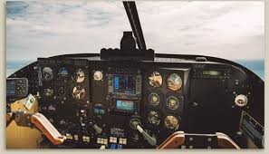
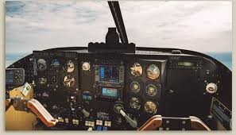
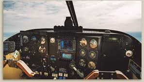

Esta rama de la ingeniería se ocupa del diseño, desarrollo y fabricación de aeronaves y sistemas de aeronaves. Los ingenieros aeronáuticos trabajan en una variedad de campos, desde la industria aeroespacial hasta la defensa, y utilizan su conocimiento de la física y la ingeniería para diseñar y desarrollar aeronaves y sistemas de aeronaves.
Una especialización en esta rama es la Ingeniería de Propulsión, que se centra en el diseño y desarrollo de sistemas de propulsión para aeronaves.
